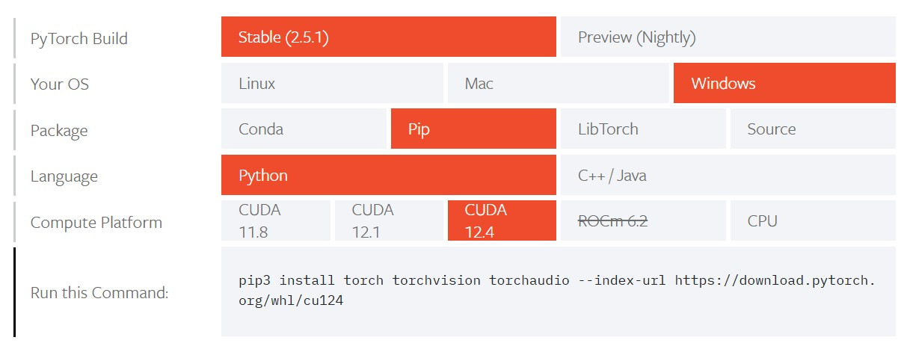

Nvidia GeForce RTX 4070 深度学习开发环境
Nvidia GeForce RTX 4070Ti SUPER 凭借其强大的算力和先进的架构，成为深度学习开发的理想硬件选择。在Windows 系统下构建基于该显卡的深度学习开发环境，能够深度挖掘它的性能潜力，显著提升深度学习任务的执行速度。本文介绍详细4070Ti SUPER的AI开发环境搭建过程。
2024年12月17日

Nvidia GeForce RTX 4070Ti SUPER 凭借其强大的算力和先进的架构，成为深度学习开发的理想硬件选择。在Windows 系统下构建基于该显卡的深度学习开发环境，能够深度挖掘它的性能潜力，显著提升深度学习任务的执行速度。本文介绍详细4070Ti SUPER的AI开发环境搭建过程。
2024年12月17日
Stable Diffusion 是一款免费、开源的 AI 图像生成器。由 Stability AI 公司于 2022 年 8 月推出。2024 年 10 月，发布 Stable Diffusion 3.5。本文简单介绍SD3.5的模型结构，并通过pytorch加载测试。
2024年11月17日

LaTeX 是一种基于 TeX 的排版系统，广泛应用于学术、科研、出版等领域，用于高质量的技术文档、书籍、论文等的排版。本文介绍其在VS Code中的集成使用。
2024年6月28日

深度学习作为人工智能领域的关键技术，正深刻改变着众多行业的发展格局。从图像识别到自然语言处理，深度学习模型展现出了强大的能力。本文将带你深入了解深度学习的核心概念、训练与推理过程，并通过具体的 Python 代码示例，帮助你快速上手。
2023年8月1日